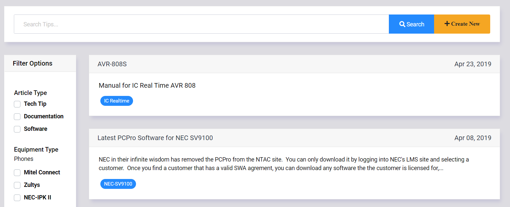
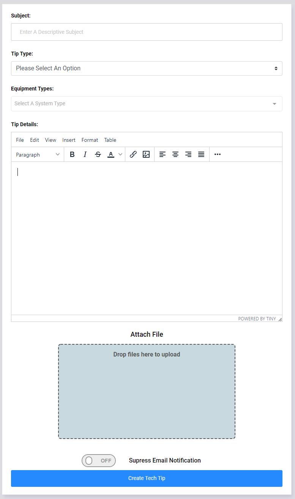
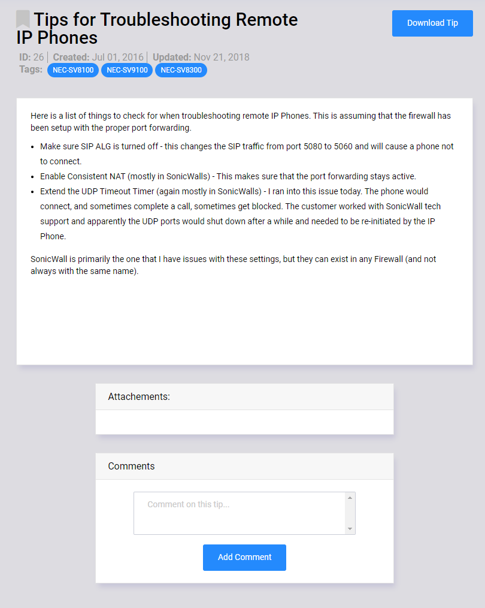

Tech Tips¶
It is important for field technicians to have centralized access to the latest manuals and software for the equipment that they work on. It is also importatnt to be able to share new tips and tricks when a tech finds an easier way to complete a task, or comes across an application or problem that needs to be shared with their fellow techs. The Tech Tips section provides that centralized access that allows techs to collaborate and share information that can be easily ched for at a later date.
Any time a new Tech Tip is created, an email is sent to all registerd users with the basic Tech Tip information, and a link to view the Tech Tip in it entirety along with any attached files.
Search Page¶
The Tech Tips Search page allows you to search through the list of Tech Tips, Documentation, and Software that has been uploaded to the Tech Bench quickly. The search field can accept the ID number of the Tech Tip, part of the Subject, or a key phrase from the body of the Tech Tip. The newest Tech Tips will be listed first in the list, and a brief synopsis of each tip will show in the search results.
To create a new Tech Tip, click on the “Create New” link to the right of the search bar.
New Tech Tip Form¶
- Fill out the Tech Tip Form with the following information:
Subject - Enter a descriptive subject that will allow other users to understand the reason for the Tech Tip.
- Tip Type - Select one of the following options
Tech Tip - A simple knowledge base tip for others to learn from.
Documentation - Equipment manuals and guides.
Software - Equipment Firmware and Software.
Eqiupment Types - Select all of the Equipment that this Tech Tip applies to.
Tip Details - The main body of the Tech Tip. Use the Editing Tools provided to format the tip body as needed.
Attach File - If it is necessary to attach files to the tip, drag them into the box, or click inside the box to manually select files.
When you submit the new Tech Tip, you will be redirected to the main Tech Tip page for this new Tip.
